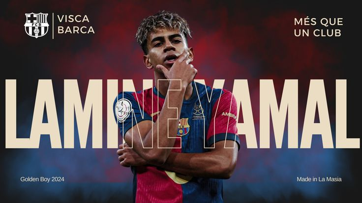

Early Life & Background
Lamine Yamal Nasraoui Ebana was born in July 13th, 2007 in Esplugues de Llobregat, Spain. He grew up in Catalonia and was known as a quiet but extremely dedicated kid who always carried a football.
Lamine Yamal started his professional career at a notable 15 years of age, making him the youngest person to ever play for a top level soccer club. His future is extremely bright, as he will be part of the starting 11 in this year's world cup for Spain.
Lamine Yamal Nasraoui Ebana was born in July 13th, 2007 in Esplugues de Llobregat, Spain. He grew up in Catalonia and was known as a quiet but extremely dedicated kid who always carried a football.
He joined CF La Torreta in 2012, then moved to FC Barcelona's La Masia academy in 2014. He ended up progressing through the age groups faster than any player in his generation. He trained Trained with Barcelona’s first team while still playing for the U19s.
He made his first-team debut on April 2023 vs Real Betis at 15 years, 9 months, 16 days of age. This makes him the youngest player in club history. He set multiple records: He was the youngest Barca player to ever reach 50 appearances, and was the youngest goalscorer in El Clasico.
Now, Yamal is still playing for barcelona, and is going to play for Spain in this upcoming world cup. He will likely play as a inverted right winger. Going into the World Cup, he has already won The Kopa Trophy twice (first player to ever win it twice), and was a Ballon d'Or runner-up at 18 years old.

| Videos about Lamine Yamal | ||
|---|---|---|
| Analysis | ||
| Highlights | ||